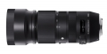

器材库 > 35mm画幅AF变焦镜头 > DG 100-400/5-6.3 OS HSM Contemporary

详细规格
镜头类型
超远摄变焦镜头
发布日期
2017-02-21
焦距
100mm-400mm
最大光圈
f/5-6.3
最小光圈
f/22
视角（对角）
24.4° - 6.2°
镜头结构
21片/15组
低/超低色散镜片
4片
光圈叶片
9片
最近对焦距离
160cm
最大放大倍率
1:3.8
驱动马达
HSM（超声波马达）
滤镜口径
67mm
镜头卡口
Canon EF, Nikon F, Sigma SA
防抖
是
颜色
黑色
尺寸
86.4×182.3mm
重量
1160g
附件
遮光罩 LH770-04
yanhe2018-10-24 17:384.75 分
操作性 4.50耐用性 4.50性价比 5.00解像力 5.00色彩还原 5.00机械结构 4.50
激动的心2018-08-30 07:564.67 分
操作性 5.00耐用性 4.00性价比 5.00解像力 5.00色彩还原 5.00机械结构 4.00
chaoyagami2018-03-29 22:054.58 分
操作性 5.00耐用性 4.00性价比 5.00解像力 5.00色彩还原 4.50机械结构 4.00
longyu11292018-01-01 11:024.58 分
操作性 3.50耐用性 5.00性价比 5.00解像力 5.00色彩还原 5.00机械结构 4.00
产品图 / 样片
DG 100-400/5-6.3 OS HSM Contemporary
评测 / 相关文章
- 体验轻火箭的威力 适马100-400mm C测评 （存档）
- ［行情］适马100-400mm C国内上市销售 （存档）
- ［试用］适马100-400mm C镜头实拍样片 （存档）
- ［资讯］CP+2017独家报道 各家新货逐个品（下） （存档）
- ［资讯］黑科技降临 适马发布四支镜头新品 （存档）